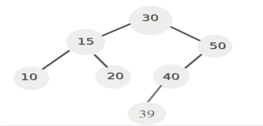

Zadanie 3
Pytanie: Jak będzie wyglądała procedura znalezienia następnika węzła 30 w poniższym drzewie?:

Odpowiedzi:
A) Idziemy raz w prawo, a nastepnie do "oporu" w lewo.
B) Idziemy raz w lewo, a nastepnie do "oporu" w prawo.
C) Wskazany węzeł nie ma poprzednika.
D) Żadne z powyższych.